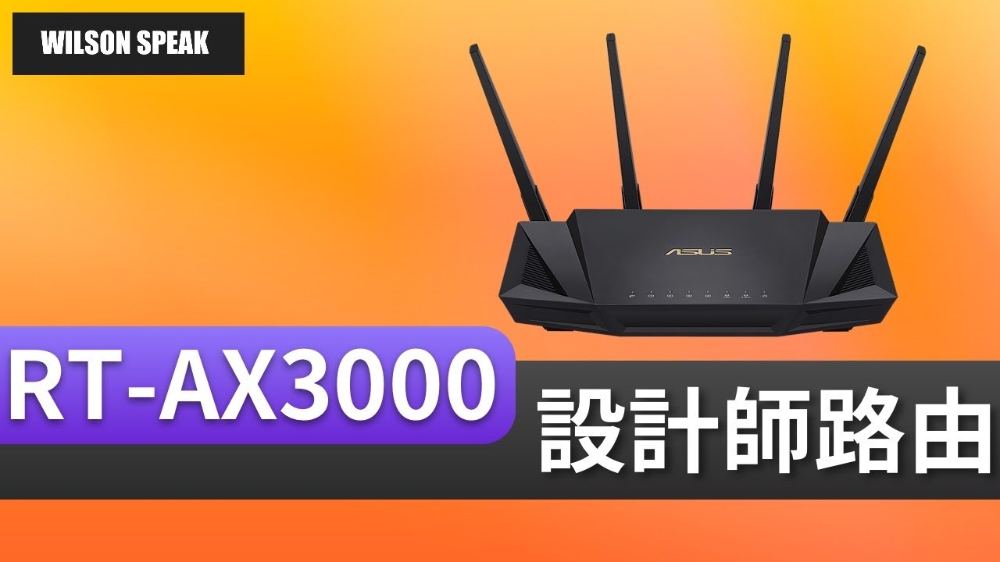

Wi-Fi 開 160 MHz 就會快一倍？先看裝置、頻道和環境

原片發布 2020-01-05 · 點封面看原片。
看到路由器支援 160 MHz，很容易以為打開之後上網就能快一倍。先問兩件事：你的裝置用不用得到，以及現在的瓶頸是不是無線連線。這兩項沒弄清楚，改了設定也可能沒有感覺。
Wilson 在 2020 年的 RT-AX3000 影片談到寬頻道。這篇把觀念拉回家裡的使用情境：看設定、看終端支援，再比較實際工作。原片中的舊機型經驗，不直接代表所有新舊設備都一樣。
160 MHz 說的是頻道寬度
160 MHz 是無線頻道寬度，和電信商方案的 Mbps 是不同單位。相較 80 MHz，它利用較寬的頻譜；其他條件相同且兩端支援時，可提供較高理論物理速率的機會，但不代表應用程式傳輸量一定加倍。
實際傳輸還有通訊開銷、訊號品質、終端能力和沿途設備的限制。若測的是外網，電信方案或遠端服務也可能先到上限。先搞清楚正在看的是連線速率、下載速度，還是頻道寬度，才不會把三個數字混在一起。
路由器能開，手機也要支援才用得到
路由器可以設定 160 MHz，不代表手機就支援。同樣標示 Wi-Fi 6，裝置的頻道寬度、空間串流與使用頻段仍可能不同。要從該裝置的官方規格和驅動資訊確認，不要只靠產品名稱或年份猜。
設定介面的選項也不一定等於目前連線採用的狀態。有些介面顯示的是允許的最大寬度，實際協商資訊可能要到客戶端清單或裝置端查看。若看不到，至少保留同位置、同裝置的工作測試，別只憑按下套用就宣布升級成功。
| 比較項目 | 80 MHz | 160 MHz |
|---|---|---|
| 占用的頻譜 | 較窄 | 較寬 |
| 使用前提 | 路由器與終端支援 | 路由器、終端與可用頻道都支援 |
| 怎麼決定 | 在常用位置測試 | 同位置比較吞吐量與穩定度 |
頻道寬度不是寬頻方案速率。160 MHz 不保證實際傳輸快一倍；DFS 規範依地區與頻道而異。
頻道變寬，也會占用更多頻譜
較寬的頻道需要更多可用頻譜，在鄰近網路密集的地方，可能較容易遇到其他使用者或干擾。這並不表示 160 MHz 一定不穩，也不表示 80 MHz 一定乾淨，現場使用情況才是比較的依據。
可用頻道還受地區法規、頻段與機型限制。有些系統會自動安排頻道和寬度，手動指定前先讀官方建議。別照抄別人家的頻道號碼，也不要改國別設定去取得當地不允許的選項。
遇到 DFS，等待或換頻不一定是故障
在 5 GHz 使用部分頻道時會涉及 DFS，設備要依規範偵測雷達並避讓。啟用前可能先做頻道可用性檢查；運作期間偵測到雷達，也可能換頻，讓連線短暫受影響。等待時間與行為不能用單一數字套所有地區。
剛套用設定時連不上，或日誌出現換頻紀錄，都值得和 DFS 狀態一起確認，但不能把所有斷線都歸因於雷達。可以依官方允許的選項調整並比較，無論 80 或 160 MHz，都要看實際使用的頻道。
- 記下調整前的頻道與寬度，保留可回復的設定。
- 查看官方說明與日誌，確認是否涉及 DFS 等待或換頻。
- 比較設定前後能否穩定重現改善，不要只測一次。
上網和家裡傳檔，要分開比較
上網測速會經過電信網路與外部伺服器；傳檔到家裡 NAS，通常走的是內部網路。前者慢可能受外網限制，後者則要看 NAS、交換器、磁碟和無線這整條路。兩種結果不要直接互相代替。
若原本的無線連線已足以支撐串流，改寬後未必看得出差別。若正好是無線吞吐量限制了本地傳檔，才比較可能觀察到收益，但仍需讓其他設備跟得上，不能保證加了寬度就能跑滿。
先測真實工作，再保留合適設定
固定筆電、位置、目的地與測試檔案，再比較 80 和 160 MHz。除了傳完要多久，也記錄連線是否中斷、互動服務是否穩定。不要一邊改頻道、一邊移路由器，否則很難知道哪個改動有效。
如果更寬沒有帶來需要的收益，或者穩定度反而不好，就保留較適合的設定。對一般使用者來說，能穩定完成工作比介面顯示最大規格實際；選擇也可以在環境或裝置換新後重新評估。
你可能還想問
Wi-Fi 6 就一定有 160 MHz 嗎？
沒有。要分別確認路由器與終端的支援頻段、頻道寬度及設定，Wi-Fi 世代名稱不足以代表全部規格。
改成 80 MHz 就不會遇到 DFS 嗎？
不一定。DFS 和使用的頻道、地區規範有關，不能只從寬度判斷。請看該機型官方文件與當下頻道資訊。
沒有 NAS，還需要測本地傳檔嗎？
不必為測試先買設備。先用日常工作判斷是否有困擾；若要進一步區分無線與外網瓶頸，再利用現有設備或請人協助做合適的本地測試。
影片與參考資料
原片發布 2020-01-05。文章整理 2026-11-14，依影片公開標題、說明延伸，並以官方資料校訂。實際設定請對照你的型號與版本。